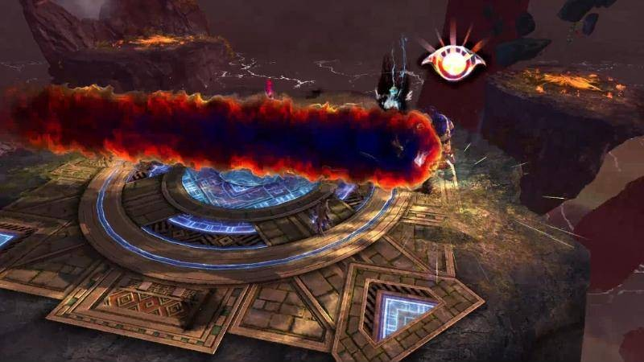
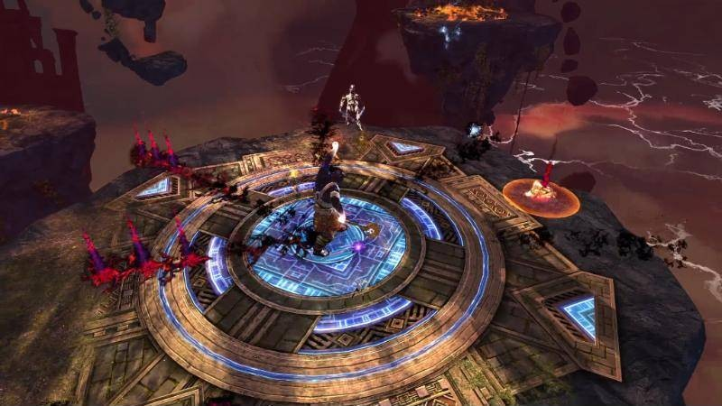
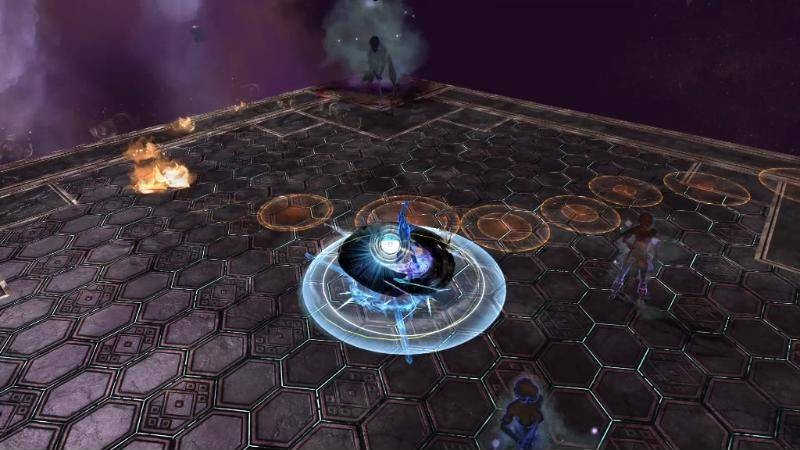
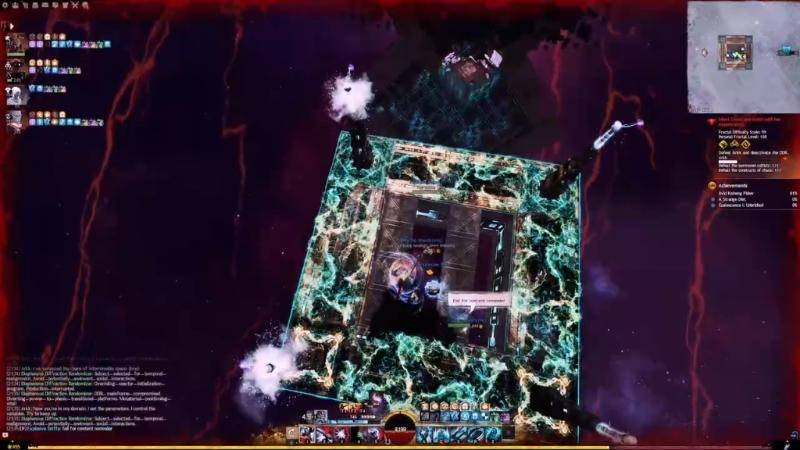
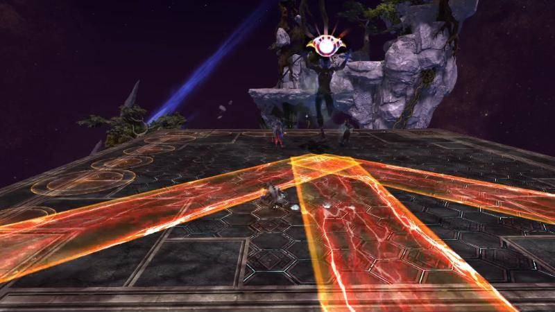
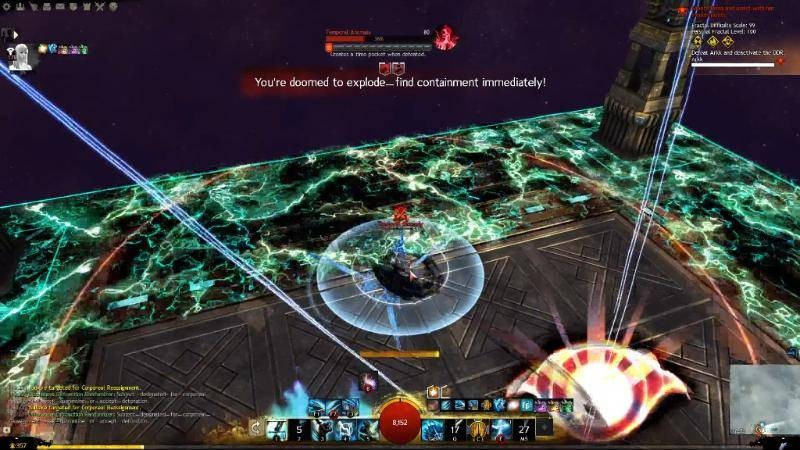

Sonst Fear. Skorvald: Laser quer über die Plattform = One-Shot. Artsariiv: Dreifach-Laser zu Beginn und nach jeder Phase. Arkk: startet mit dem Auge, auch in der Archdiviner-Phase im Westen.
2
Skorvald 66 % / 33 %: Anomalien
4 Anomalien im Zeitlimit töten – sonst wiped der aufgeladene Angriff die Gruppe. Bomben-Icon über dir: er teleportiert zu dir → Ausweichen timen.
3
Skorvald: Solar Cyclone
Kurz nach 33 % größer, dreht sich ~15 s mit harten Knockbacks → Stabi und nicht in seiner Hitbox stehen.
4
Artsariiv: Skull & Ball
Bei Corporeal Reassignment Anomalie in der Mitte töten → Schutzkuppel. Ball verpasst = alle down. Side Slam: ausweichen oder Stabi. Nach jeder Phase werden alle belebt.
5
Arkk: Reaktor, Green & Skull
Reaktor bei 80 / 50 / 30 % schnell abschließen. Green: nur 1 weiterer Spieler nötig. Skull: Anomalie an zufälliger Stelle töten → Kuppel.
6
Arkk 70 % & letzte 40 %
Bei 70 % verschwindet Arkk → Elite-Archdiviner + Mobs töten. In den letzten 40 % verschwinden Plattformen: Wer durchfällt, landet hoch in der Luft → Hypernova Launch nutzen, um ohne Fallschaden zu landen.

① Skorvald-Laser – Auge = wegschauen

③ Solar Cyclone

④ Kuppel nach Anomalie-Kill

⑥ Plattformen fallen weg
Details zum Nachschlagen
Start
Spieler mit allen SO-Erfolgen klickt die Challenge Mote → Harbinger of Woe fragt nach CM. Dann zur Plattform runterspringen und den Orb anklicken.
Skorvald the Shattered
Solar Cyclone nach 33 %
Alle NM-Mechaniken, aber schneller, größer, härter. Startet mit Defiance Bar.
Blinding Radiance: Laser über die Plattform (One-Shot), Auge über dem Kopf → wegschauen.
Ab 66 %: fixiert und teleportiert sich über die Plattform, Angriff ähnlich wie „Surge of the Mists“.
Warp / Spiral Strike: Bomben-Icon über einem Spieler → Skorvald porte zu ihm, Ausweichen timen.
66 % / 33 %: 4 Anomalien im Zeitlimit.
Solar Cyclone: enraged, wächst, dreht sich ~15 s mit Knockbacks – Stabi, raus aus der Hitbox. Solar Blooms und (danach) Augen spawnen.
Artsariiv

Dreifach-Laser mit Auge
Deutlich mehr AoEs als im NM.
Dreifach-Laser mit Auge zu Beginn und nach jeder Phase – wegschauen (Fear).
Side Slam: Sprung + Knockback – ausweichen oder Stabi.
Corporeal Reassignment: Anomalie in der Mitte töten → Schutzkuppel.
Split-Phasen: erst 5 Klone (Ecken + Mitte), dann 9 Klone. Ball verpasst → sie wechselt die Ecke und alle werden gedownt. Nach jeder Phase Auto-Rez.
Arkk

Skull + Auge gleichzeitig
Arkk erscheint sofort in der Mitte, kein Reaktor zu Beginn – Start mit Auge.
Reaktor bei 80 / 50 / 30 %. Green klebt an einem Spieler, braucht nur einen zweiten.
Skull: Anomalie spawnt zufällig auf der Plattform – töten für die Kuppel.
70 %: Elite-Archdiviner + Mobs; Arkk kann im Westen mit Auge auftauchen.
Letzte 40 %: Plattformen verschwinden – Hypernova Launch zum sicheren Landen.
Klassen & Rollen
Daten: GW2 Wingman, Challenge Mode, „Balance Patch November 2026“, Stand 21.11.2026 · Skorvald: Erfolgsquote 85,7 %, Median-Kill 2:00 min · Artsariiv: Erfolgsquote 68,1 %, Median-Kill 1:44 min · Arkk: Erfolgsquote 82,4 %, Median-Kill 2:20 min
Am häufigsten gespielt (Ø über alle Bosse)
Spec
Anteil
Dragonhunter
13,2 %
Troubadour
11,3 %
Amalgam
11,1 %
Soulbeast
9,9 %
Scrapper
7,3 %
Mechanist
6,8 %
Renegade
6,2 %
Reaper
4,4 %
Chronomancer
4,3 %
Luminary
3,0 %
Höchster Ø-DPS je Boss (CM)
Spec
Ø Skorvald
Ø Artsariiv
Ø Arkk
Soulbeast
15.163
19.094
20.189
Dragonhunter
13.262
18.166
20.939
Holosmith
14.737
15.884
18.796
Scrapper
12.283
18.390
18.442
Bladesworn
12.432
16.388
20.163
Amalgam
11.923
15.793
17.169
Catalyst
10.508
17.201
16.072
Virtuoso
11.817
15.201
16.151
Weaver
10.584
14.997
17.062
Renegade
11.692
14.465
15.241
Rollen-Empfehlung (abgeleitet aus Beliebtheit + Ø-DPS)
Rolle
Specs
Warum
DPS sicher & beliebt
Dragonhunter, Amalgam, Soulbeast, Scrapper
Am häufigsten in erfolgreichen CM-Logs – bewährt für diese Mechaniken.
Große Spanne zwischen Ø und Top-DPS → als Support und als (Boon-)DPS gespielt.
Heal-Support
Troubadour, Chronomancer
Ø-DPS unter 3,5k → in CM-Logs praktisch nur als Heiler/Support.
Komp-Tipp: Typische 5er-Fraktal-Komp: Heal-Support + Boon-DPS + 3 DPS. Wichtig in SO: genug Stabi (Solar Cyclone, Side Slam) und schneller DPS auf Anomalien.
Klassentipps – worauf du achten musst
Mechanik-Bezug aus dem Hardstuck-Guide; die Klassenhinweise sind allgemeine Spieltipps. Für die neuesten Elite-Specs (z. B. Troubadour, Ritualist, Paragon, Luminary, Conduit, Evoker, Antiquary, Galeshot, Amalgam) gelten v. a. die Klassen-Grundregeln – prüfe die konkreten Skills im aktuellen Build.
Wächter
Firebrand · Luminary · Willbender · Dragonhunter
Dragonhunter: meistgespielter DPS, höchster Top-Wert auf Artsariiv.
„Stand Your Ground!“ für Solar Cyclone.
Willbender: nicht in die Hitbox dashen.
Ingenieur
Mechanist · Amalgam · Scrapper · Holosmith
Scrapper/Amalgam/Holosmith: starker Ø-DPS.
Schneller Burst für die Anomalien.
Mechanist: Mech hält Uptime beim Wegschauen.
Mesmer
Virtuoso · Chronomancer · Troubadour · Mirage
Virtuoso: Fernkampf – Wegschauen kostet kaum DPS.
Portal/Blink zur Ball- und Kuppel-Positionierung.
Troubadour: häufigster Heiler.
Elementarmagier
Tempest · Weaver · Catalyst · Evoker
Weaver hoher Ø-DPS auf Arkk.
Channels pausieren, wenn das Auge erscheint.
Lightning Flash für schnelle Ball-Bounces.
Nekromant
Ritualist · Scourge · Reaper · Harbinger
Reaper/Harbinger solide.
Shroud hilft nicht gegen Fear – trotzdem wegschauen.
Necro-Fear/Pulls für Anomalien und Adds.
Widergänger
Renegade · Vindicator · Herald · Conduit
Renegade: sehr beliebt (ca. 6 %).
Jalis: Inspiring Reinforcement = Stabi-Quelle.
Vindicator-Sprung-Dodge über Side-Slam-AoEs.
Krieger
Berserker · Spellbreaker · Bladesworn · Paragon
Bladesworn: hoher Ø-DPS – Dragon Trigger nicht ins Auge laden.
Balanced Stance gegen Cyclone-Knockbacks.
Hammer-CC für die Skorvald-Breakbar.
Waldläufer
Soulbeast · Untamed · Galeshot · Druid
Soulbeast: Top-Ø auf Skorvald.
Dolyak Stance = Gruppen-Stabi.
Longbow-Knockback für Adds/Anomalien.
Dieb
Daredevil · Deadeye · Specter · Antiquary
Daredevil: Dodges für Warp/Spiral Strike.
Shadowstep für Ball und Kuppel.
Deadeye: Kneel stationär – Auge und Plattformen beachten.